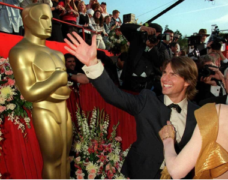
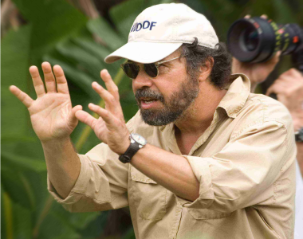

Последний самурай
4 премии «Оскар» | 15 наград | 39 номинаций
Обладатель 15 наград
Фильм является художественной интерпретацией событий, происходивших в Японии во второй половине IX века, а именно в переломный для Японии момент введения всевозможных модернизаций по западному образцу


